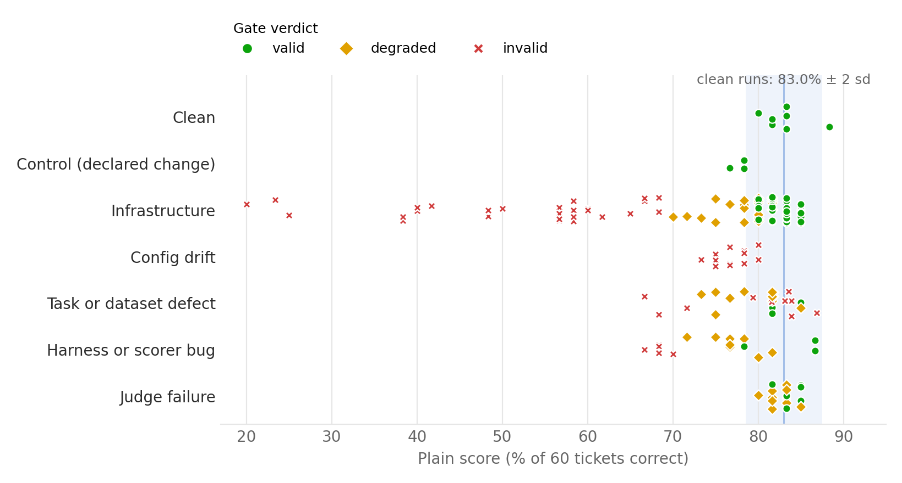
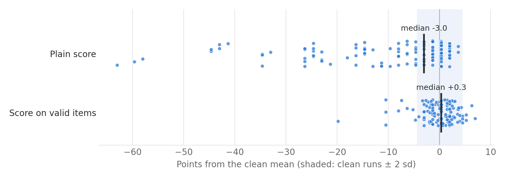
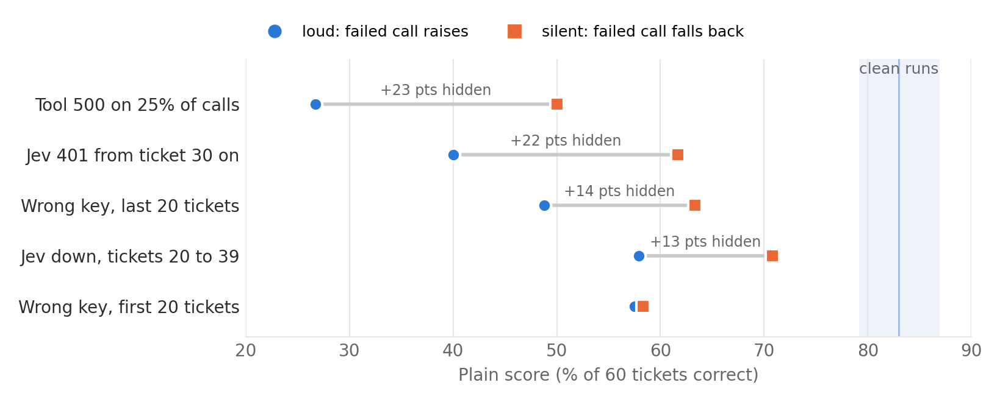
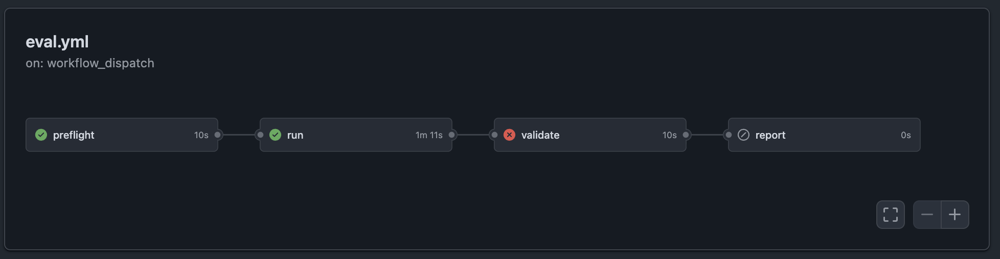
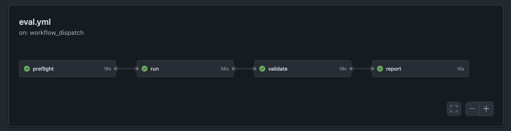

Is This Run Valid? Attributing Pipeline Failures Before Scoring LLM Evaluations
Abstract. An eval score only means something if the run that produced it worked. Most eval pipelines report a number either way, so a rate-limited API, a changed prompt or a scorer bug shows up as a model regression. I propose checking whether a run is valid before scoring it: fingerprint the run, run preflight canaries, trace every item with OpenTelemetry, assign each failed item a cause, and gate the run as valid, degraded or invalid. I tested this on a small support-agent eval built on Jev, a small decision model from TypeSafe, with a fault service (faultd) that can break any part of the eval and a GitHub Actions pipeline that can break itself: 238 runs on the real API, for about $1.05.
Three results stand out. An older commit of the agent code scored at or above the best clean run, and only the fingerprint showed that the wrong code had been tested. When the agent silently swallowed failed calls, the plain score hid up to 23 points of damage, and the gate still caught every case from the traces. And repeating the LLM judge missed most of its mistakes: it was wrong on a quarter of items but disagreed with itself on only 3.5% of them.
Overall, 44% of faulted runs would have read as regressions to a plain score comparison, and the gate flagged every run whose faults crossed its thresholds. Attribution named the right cause for every affected item, but I wrote both the faults and the rules, so this shows the rules match the taxonomy, not that they would catch faults nobody planned for. The paper ends with the gate as a working CI pipeline.
In practice: add a validity gate between running an eval and publishing its score. Check a fingerprint of the run against the baseline, check that every item has a successful model and judge call, and check that results were collected once, from one run. Section 7 gives the stages.
1. The problem
While running the experiments for my previous paper, several things broke that had nothing to do with the models being tested. TypeSafe's API returned 503 on 26 of 40 pilot calls (TypeSafe makes Jev, a small model that answers typed questions, such as picking one option from a list or answering yes or no, with a confidence score). Claude Opus 5.5 rejected forced tool calls, and an SDK update removed the temperature parameter. One task asked the agent to ship an order that was already shipped, so no correct action existed. The scorer counted paging through a table as a false action. Each of these was found by hand, after the fact, by reading results that looked wrong. Each would have looked like a model regression in a dashboard.
This is the normal state of LLM evaluation pipelines. A score comes out whether the run worked or not. When the score drops, someone has to work out whether the model got worse, the judge broke, the dataset changed, or the infrastructure had a bad hour. That triage is slow, and when it is skipped, wrong conclusions ship.
This paper asks four questions:
- How often does a pipeline fault produce a false regression, or a false improvement, in a naive score?
- Can each failed item be attributed to the right cause automatically, from traces and run metadata alone?
- Where should a validity gate's threshold sit, trading bad runs caught against good runs wrongly rejected?
- Once invalid items are excluded, how close is the remaining score to a clean run's score?
2. Related work
Flaky tests. Software testing has studied this problem for a long time. Luo et al. (2014) built a root-cause taxonomy of flaky tests from fixed issues, and Google's testing blog (2016) described rerunning and quarantining flaky tests at scale. A 2023 multivocal review covers causes, detection and responses, and work on systemic flakiness shows that flaky failures often co-occur from one shared cause, which is close to the run-level view here. I borrow the taxonomy-first approach and the idea that a failure is not automatically a verdict on the code under test. The difference is that an eval produces a score, not a pass or fail, so a fault moves a number instead of turning a test red.
Infrastructure noise in LLM evals. Anthropic (2026) found that resource settings alone moved Terminal-Bench 2.0 scores by about 6 percentage points, with infrastructure error rates falling from 5.8% to 0.5% as limits were raised. That is direct evidence for the problem. It studies one kind of fault on one benchmark; this paper injects six kinds and tests attribution and a gate.
Reproducible evaluation. Biderman et al. (2024), from the lm-evaluation-harness team, catalog how small setup details change results and argue for sharing exact configurations. The run fingerprint here makes that comparison automatic and per run.
Benchmark auditing. BenchGuard (Tu et al., 2026) uses LLMs to audit agent benchmarks for defects in instructions, ground truth and evaluation scripts, and found 12 confirmed defects in ScienceAgentBench. Audits like this check a benchmark once, before use. This paper checks each run as it happens, and covers infrastructure and judge faults as well as dataset defects.
Statistics of eval scores. Miller (2024) sets out how to put error bars on eval scores and compare models properly. That work assumes the run is valid; this paper checks that first.
Tooling. The OpenTelemetry GenAI semantic conventions give standard attributes for model calls, which this paper uses and extends. Eval harnesses record logs and configurations but, as far as I found, do not issue a validity verdict on a run.
3. A taxonomy of failures
Six causes. Only the last should count against the model. The right-hand column is what actually happened in my previous paper.
| Cause | What it looks like | Signal that detects it | Seen in paper 1 |
|---|---|---|---|
| Infrastructure | Timeouts, restarts, rate limits, outages, auth failures | Error status, HTTP codes and retries in traces | 503 on 26 of 40 pilot calls |
| Config drift | Model, prompt, context, code or dependencies changed between runs | Run fingerprint differs from the baseline | Forced tool calls rejected; SDK dropped temperature |
| Judge failure | Unparseable verdicts, verdicts that change on repeat | Parse errors; disagreement between judge repeats | Not seen |
| Task or dataset defect | The expected answer is wrong, the record is missing, items are duplicated | Expected answer inconsistent with its fixture; lookup fails; duplicate IDs | A task asked to ship an already-shipped order |
| Harness or scorer bug | The code that scores the output is wrong | Scorer's view disagrees with the trace; scorer fails known-answer cases | Paging scored as a false action |
| Model failure | The model got a valid item wrong in a valid run | None of the above | What we want to measure |
A run where only some items finished is a state of the run, not a cause, and has its own rule in the gate.
4. The run validity framework
- Preflight. Before any scored item: data files match their checksums, Jev answers a trivial canary question, the judge answers a trivial yes/no canary, and the scorer gets twelve known-answer cases right. A failed preflight stops the run.
- Fingerprint. A manifest records the model, hashes of the policy prompt, the decision and judge instructions, the context fields sent, the dataset, the agent code and the scorer code, plus package versions, lockfile hash and Python version. Fields are grouped by how much a change matters: a critical field that differs from the baseline without being declared makes the run invalid; a warning field makes it degraded.
- Traced run. Every item is an OpenTelemetry trace. Every Jev call and tool call is a span, written to disk as soon as it ends, so a run killed part way still leaves its traces.
- Attribution. Rules over each item's spans, its record and the run's fingerprint assign one cause. Items with any cause other than model failure are excluded from the score and listed.
- Gate. The run is invalid if preflight failed, a critical field drifted, results from another run are mixed in, fewer than 90% of items finished, or more than 15% of items were excluded. It is degraded for more than 2% excluded, a partial run above 90%, a warning-level drift, or a withheld judge score. Otherwise it is valid. These thresholds are starting values, frozen on a development split before the held-out runs are scored.
Span attributes
| Attribute | On | Used for |
|---|---|---|
gen_ai.system, gen_ai.request.model, gen_ai.operation.name, gen_ai.usage.input_tokens | Jev calls | Standard GenAI conventions; cost |
http.response.status_code, error.type | Jev and tool calls | Infrastructure versus other causes |
jev.attempts, jev.parse_ok, jev.latency_s | Jev calls | Retries absorbed; unparseable answers |
eval.role | Jev calls | Separates the agent's decision from the judge |
tool.name, tool.status | Tool calls | What the agent actually did, independent of the scorer |
eval.item_index, eval.ticket_id, eval.run_id | All | Grouping spans by item and run |
eval.item.consistent | Item | Expected answer still matches the fixture |
Nothing in a span says whether a failure was injected. The transport records a failed call even when the agent code swallows it, which is how silent fallbacks are caught (Section 5.4).
5. Experimental setup
5.1 The eval under test
A support agent works 60 customer tickets against a local orders service. For each ticket it looks up the order and the stock, asks Jev which action a five-rule support policy calls for (refund, reship, escalate, or reply only), takes that action and replies. The policy has edge cases on purpose: refunds over $500 must be escalated, damage reported more than 30 days after delivery is escalated, and a lost order is reshipped only if the item is in stock.
The first dataset was too easy. On 60 straightforward tickets Jev scored 60 of 60 on the real API. A perfect score leaves nothing for the gate to separate: no natural model failures, and no spread between clean runs. I wrote a second set of 60 tickets under the same policy, each hard in one deliberate way, and used it for every result below.
| Kind of difficulty | Tickets | Example |
|---|---|---|
| Indirect wording or a distracting order number | 18 | "The box says webcam but inside is a ring light." |
| Customer asks for an action the policy does not give | 13 | A lost order, in stock, "just refund me": the policy says reship. |
| The $500 refund limit | 10 | Exactly $500 is refunded; an $899 lost order is reshipped, because the limit applies to refunds only. |
| Claim disagrees with the record | 9 | "Got it last week and it's broken" on an order delivered 45 days ago. |
| Dates exactly on a cutoff | 6 | Delivered exactly 30 days ago; shipped exactly 14 days ago. |
| Angry about an order that has not shipped | 4 | "Taking FOREVER, refund me now" on a Processing order. |
Table 1. Dataset v2. Expected actions are 17 refund, 17 reply, 13 escalate and 13 reship, generated by a reference policy function.
After the first clean run on this set, I read every miss. Two of the eight were arguable readings of the policy text rather than model errors ("within the last 30 days" at exactly 30 days, and whether the "never arrived" rule covers a customer asking where the order is). I tightened the wording of those two rules rather than the labels, and every result below uses the tightened policy.
A deterministic scorer checks the service's side effects against the expected action. A judge asks Jev twice per ticket whether the resolution follows the policy, so the judge-failure category can be exercised and checked against the deterministic score. Jev answers through TypeSafe's typed choice and noul questions. Every decision in the system, the agent's and the judge's, is made by Jev. I chose one cheap model on purpose: the subject of this paper is the pipeline, not the model.
Paper 1's harness was built to be stable, so faults could not be switched on cleanly there. This repo builds its own agents and routes every point of failure through one fault API.
5.2 The fault API
faultd is a small HTTP service. Every component asks it, call by call, whether to misbehave: Jev calls, judge calls, each tool, the fixture loader, the dataset loader, the scorer and the run configuration. A fault has a kind, a target, a rate, an item range and a seed, so any faulted run can be replayed exactly. faultd writes what it injected to a ground-truth log. Attribution and the gate never read that log; a test fails if anything in the validity code imports faultd or names its log, and another test checks that a verdict is identical with the log deleted. Injected faults raise the same exceptions or return the same malformed bodies as real ones.
5.3 Faults inside a run
| Cause | Faults |
|---|---|
| Infrastructure | Jev 503, 429, timeout, connection refused, malformed body, out-of-range answer; tool 500; judge 503; Jev down for a window of tickets, down for the whole run, or flapping; slow responses |
| Config drift | Policy prompt edited (refund limit dropped), stock removed from the context, decision instructions reworded; each undeclared |
| Judge failure | Malformed judge answers; judge verdicts flipped |
| Task or dataset defect | Stale fixture (order status changed), order record removed, ticket duplicated |
| Harness or scorer bug | Scorer compares against the next ticket's expected answer; service state not reset between tickets; an always-on scorer bug |
| Control | Stock removed from the context, declared in the manifest. A real regression that the gate should let through. |
Table 2. Item-level faults. Per-call faults run at two doses, 5% and 25% of calls.
5.4 Wrong key and silent fallbacks
One fault is real rather than simulated. For part of a run the agent sends an invalid key, and TypeSafe returns a real 401; then it switches to the correct key. This is run under two error policies. With a loud policy, the failed call raises and the item is marked errored. With a silent policy, the agent falls back to replying only and the judge votes "fail". Silent fallbacks are the realistic bug: the items look like ordinary wrong answers. The check that catches both is coverage. Every ticket must have a successful decision span and successful judge spans; a ticket without them is a missed eval, not a wrong answer. Comparing the traces of a real 401 with a faultd 401 also tests whether the simulated faults look like real ones.
5.5 Faults in the pipeline
| Cause | Pipeline fault | How it is injected |
|---|---|---|
| Infrastructure | Runner killed mid-run | A step kills the run process |
| Infrastructure | Job timeout | The run step is cut off after a few seconds |
| Infrastructure | Partial artifact upload | Traces are dropped before upload |
| Config drift | Dependency drift | Older OpenTelemetry versions installed instead of the lockfile's |
| Config drift | Python version drift | Runner set up with a different Python |
| Config drift | Missing environment variable | POLICY_VERSION unset, so the code falls back to a stale default prompt |
| Config drift | Wrong commit | An older commit of the agent code is checked out |
| Harness bug | Results merged twice | The collect step appends a run's items to itself |
| Harness bug | Runs mixed | The collect step merges two runs into one folder |
Table 3. Pipeline-level faults. These never appear in an agent trace; they test the run-level checks.
5.6 Runs
All paper runs execute in GitHub Actions on Python 3.11 with pinned dependencies, against the real Jev API, on October 2, 2026. Each run is about 180 Jev calls. The baseline fingerprint is a clean run on the final policy. A local stand-in for Jev is used only for the repo's tests.
- Clean runs: 10 on the final policy set the noise floor: the baseline run, the 5 noise-floor runs, and the clean run in each repeat of the development and held-out batches (2 + 2). They score a mean of 83.0% with a standard deviation of 2.2 points; observed range 80.0% to 88.3%, and mean ± 2 standard deviations 78.6% to 87.4%. The three clean runs in the pipeline batch came later; the pipeline's report stage uses all 13, which gives a band of 79.2% to 86.8%.
- Development batch: each of the 41 fault plans, plus a clean run and the declared control, twice (86 runs). The development split also includes two of the noise-floor clean runs, so it has 88 runs, 82 of them faulted. I tuned against this batch only.
- Freeze: attribution rules, gate thresholds and the ground-truth definitions were then frozen and tagged (
freeze-dev). - Held-out batch: the same 43 plans, twice more, with different fault seeds, so faults land on different calls and items (86 runs, plus two noise-floor clean runs: 88).
- Silent-fallback batch: the 16 infrastructure, judge and wrong-key plans plus a clean run, with the silent error policy, twice (34 runs).
- Pipeline-fault batch: a clean eval under each of seven pipeline faults and under none, three times (24 runs). Then each of those 24 runs was collected twice more with a collect-step fault, written as a separate copy: once with its results merged twice, once mixed with another run's (48 runs).
Ground truth for each item is rebuilt from faultd's log alone. A Jev transport fault only counts when all three attempts of a call were hit; otherwise the retry absorbed it and the item was not affected. A scorer off-by-one only counts when the neighbouring expected answer differs, a missed state reset only when an earlier side effect carries over, and a stale fixture only when the changed order no longer fits the expected answer. A run's expected verdict uses the gate's own thresholds on the share of affected items, so the comparison asks whether the gate saw what really happened, not whether the thresholds are well chosen.
In total 238 runs called the real API: 3 baseline runs while the dataset and policy settled, 5 noise-floor runs, 86 development, 86 held-out, 34 silent and 24 pipeline. The 48 collect-step copies made no API calls. Spend was $1.03 for the 235 runs whose traces were kept (24.5 million input tokens), plus about $0.02 for the three runs whose traces were dropped on purpose by the lost-upload fault. There were no separate pilots on the real API; plumbing was tested against a local stand-in.
5.7 Metrics
- False regression rate (RQ1): share of faulted runs whose naive score falls outside the spread of clean runs; also false improvements.
- Attribution accuracy (RQ2): per failed item, the predicted cause against the injected one; precision and recall per cause.
- Gate decisions (RQ3): runs flagged against runs that should have been, and how the flagged share moves with the thresholds.
- Score recovery (RQ4): the score on valid items of a faulted run minus the clean baseline score, with a bootstrap interval.
6. Results
6.1 Clean runs
Ten clean runs scored a mean of 83.0% (standard deviation 2.2 points, range 80.0% to 88.3%, or 48 to 53 tickets of 60). No clean run needed a single retry. Five tickets changed answer between clean runs: four sit near the 30-day cutoff and one is shipped exactly 14 days ago. Jev is not fully deterministic near a boundary, so a run-to-run swing of two or three tickets is normal, and a plain score comparison cannot see a fault that costs fewer.
The misses in the baseline run fall into three groups. Five are the customer's word winning over the record or the policy: reshipping an order the customer says is lost when tracking shows it shipped five days ago, or refunding a lost order the policy says to reship because the customer asked for money back. Four are orders delivered 31 to 35 days ago that Jev refunds instead of escalating. One is a $649 lost order, out of stock, that Jev refunds without applying the $500 limit.
The judge. Across the 600 items in the ten clean runs, the judge's first vote disagreed with the deterministic score on 24.5% of items, but its two votes disagreed with each other on only 3.5%. Section 6.9 looks at what that means for checking a judge.
A natural config drift. Tightening the two policy rules is itself a test the gate was not built for. The first run after the change scored 50 of 60 against 52 before, a difference inside the noise floor. But eight tickets changed answer: three were fixed and five broke, mostly orders delivered 31 to 35 days ago that Jev now refunded instead of escalating. The gate marked the run invalid with "undeclared change from baseline in policy_hash". This is a run-level verdict. With an undeclared change the gate does not try to say which failures the change caused, and it labeled all ten failures as config drift, although comparing with the previous run only five were new. A plain score comparison would have called it noise.
6.2 How often faults look like regressions (RQ1)
A faulted run counts as a false regression when its plain score falls more than two standard deviations below the clean mean, below 78.6%.
| Injected cause | Runs per batch | False regressions, dev | False regressions, held-out | Flagged by the gate, dev / held-out |
|---|---|---|---|---|
| Infrastructure | 46 | 21 | 20 | 32 / 24 |
| Config drift | 6 | 6 | 4 | 6 / 6 |
| Task or dataset defect | 12 | 4 | 5 | 10 / 11 |
| Harness or scorer bug | 10 | 5 | 7 | 8 / 9 |
| Judge failure | 8 | 0 | 0 | 5 / 4 |
| All faulted runs | 82 | 36 (44%) | 36 (44%) | 61 / 54 |
Table 4. No faulted run produced a false improvement. Judge faults never move the agent's score, which is why they never look like regressions.

Not every faulted run should be flagged. At a 5% dose most Jev transport faults are absorbed by retries and the run is valid, which is why the gate flags 32 of 46 infrastructure runs on dev and 24 of 46 on held-out. Of the 72 false regressions, the gate marked 71 degraded or invalid. The two counts are consistent: a run should be flagged only when its faults affected more than 2% of items or changed the run itself, and the one false regression the gate passed was not in that group. That run (a scorer off-by-one on held-out) had a single affected item, under the 2% threshold, and still scored 79.7% on its valid items: that run was mostly Jev having a low run.
6.3 Attribution (RQ2)
| Cause | Affected items, dev | Affected items, held-out | Recall | Precision |
|---|---|---|---|---|
| Infrastructure | 392 | 372 | 100% | 100% |
| Task or dataset defect | 71 | 81 | 100% | 100% |
| Harness or scorer bug | 45 | 48 | 100% | 100% |
| Judge failure (judge score) | 108 | 134 | 94% / 92% | not computed |
Table 5. The first three rows are attribution for the agent's score; config drift is judged per run, not per item. Unaffected items wrongly excluded from the agent's score: 0 of 4,194 (dev) and 0 of 4,217 (held-out, after the answer-key fix below). The judge row is attribution for the judge's score, recall on dev / held-out; precision is not computed because the gate also flags the judge's natural self-disagreement, which the answer key does not count as a fault.
On held-out runs scored exactly as frozen, one unaffected item was excluded as a harness bug. On inspection the gate was right and my answer key was wrong: two missed state resets in a row carried a side effect from two tickets back, and the ground truth only looked one ticket back. I fixed the answer key, not the gate.
For the judge score, injected judge failures were attributed correctly in 101 of 108 cases (dev) and 123 of 134 (held-out). Every miss was an item where both judge votes were flipped the same way, so the repeats agreed. That is the same blind spot as in Section 6.1.
These numbers should be read with care. I wrote both the faults and the rules, each injected fault leaves a clean signal in the trace, and held-out runs vary where faults land, not what kind of fault they are. Perfect attribution here shows the rules are consistent with the taxonomy; it does not show they would catch a fault nobody thought of.
6.4 The gate (RQ3)
| Dev | Held-out, as frozen | Held-out, after fix | |
|---|---|---|---|
| Runs that should be flagged that were flagged | 60 / 60 | 54 / 54 | 54 / 54 |
| Runs that should pass that were wrongly flagged | 1 / 28 | 3 / 34 | 0 / 34 |
| Verdict level matched exactly | 87 / 88 | 85 / 88 | 88 / 88 |
Table 6. Expected verdicts use the same 2% and 15% thresholds as the gate.
The held-out batch found a real bug. The judge exclusion rate was computed as one minus the share kept, so 9 of 60 came out as 0.15000000000000002 and tripped the "over 15%" rule. Three runs were marked degraded instead of valid. The fix computes the rate from counts. The single wrong flag in the dev batch is not a bug: a run with judge faults injected on 5% of calls also had the judge's natural self-disagreement, and together they crossed the threshold. The answer key counts only injected faults; the gate counts both, which is what it should do.
The thresholds. I expected the thresholds to trade bad runs caught against good runs rejected. They do not, because attribution never excluded an item in a run where no fault had affected anything. Across the 116 dev, held-out and silent runs where a fault affected at least one item, and the 62 faulted runs where every fault was absorbed, the share of items excluded behaves like this:
| Flag a run when more than this share of items is excluded | 0% | 2% | 5% | 10% | 15% | 20% |
|---|---|---|---|---|---|---|
| Runs with affected items that are flagged | 100% | 90% | 66% | 59% | 47% | 39% |
| Runs with no affected items that are flagged | 0% | 0% | 0% | 0% | 0% | 0% |
Table 7. Agent score only. The judge-score rule adds the one wrong flag discussed above.
So in this setup the thresholds are not about accuracy. They are a reporting policy: how many excluded items a team will accept before it stops publishing a score at all. At 2% a run with a single affected ticket out of 60 still reports a plain score; at 0% it reports the valid-items score with the exclusion beside it. The trade-off would appear in a pipeline where attribution makes mistakes, which this one, with faults whose signals I designed, does not.
6.5 Score on valid items (RQ4)
Across the 136 dev and held-out runs with item-level faults, the plain score sat a median 3.0 points below the clean mean, and as far as 63 points below. After excluding the items the gate attributed to faults, the score on the remaining items sat a median 0.3 points above it, almost all of it inside the clean noise band. Measured as distance in either direction, the median gap fell from 3.0 points to 2.0 on dev and 1.6 on held-out, which is close to the clean runs' own standard deviation of 2.2.

| Injected cause | Runs | Plain score vs clean mean | Valid items vs clean mean |
|---|---|---|---|
| Infrastructure | 116 | −12.1 [−15.0, −9.5] | −0.3 [−1.0, 0.3] |
| Harness or scorer bug | 16 | −7.3 [−10.2, −4.2] | +0.5 [−0.6, 1.6] |
| Task or dataset defect | 16 | −5.6 [−8.3, −3.1] | +2.0 [+0.9, +3.1] |
| Judge failure | 20 | 0.0 [−0.7, 0.6] | 0.0 [−0.7, 0.6] |
Table 8. Mean points from the clean mean, with 95% bootstrap intervals over runs, pooled over the dev, held-out and silent batches. Runs with no score are left out: the four that stopped at preflight with Jev down (infrastructure: 46 + 46 + 28 − 4 = 116), the four with an always-on scorer bug, which preflight also stopped (harness: 10 + 10 − 4 = 16), and the eight duplicated-ticket runs, where the dataset itself changed (task defect: 12 + 12 − 8 = 16). Judge failure: 8 + 8 + 4 = 20.
For infrastructure and harness faults the valid-items score is indistinguishable from a clean run. For task defects it lands about two points above: the stale and missing records the gate excludes are not a random sample of tickets, so the tickets left over are slightly easier. Excluding bad items removes the fault's damage, but it can also change which tickets are being scored, and a report should say which were left out.
6.6 Silent fallbacks and the wrong key
With the silent error policy, a failed Jev call does not stop the item: the agent replies and takes no other action, and the judge votes "fail". In 34 silent runs the gate flagged all 30 that should have been flagged and none of the 4 that should not, with the exact verdict level matching on all 34. Attribution named the cause of all 381 affected items and wrongly excluded none of 1,659 unaffected ones. It can do this because the transport records the failed call in the trace even when the agent code swallows it, so a ticket with no successful decision call is a missed eval, not a wrong answer.
| Fault | Plain score, loud | Plain score, silent | Gate, both policies |
|---|---|---|---|
| Jev returns 401 from ticket 30 on | 40.0% | 61.7% | invalid |
| Tool 500 on 25% of calls | 26.7% | 50.0% | invalid |
| Wrong key for the last 20 tickets | 48.8% | 63.3% | invalid |
| Jev down for tickets 20 to 39 | 57.9% | 70.8% | invalid |
| Wrong key for the first 20 tickets | 57.5% | 58.3% | invalid |
Table 9. Mean plain score per policy (four loud runs, two silent). Clean runs score 83%.

Silent fallbacks make a broken run look less broken. The default action, reply only, happens to be right for many tickets, so the plain score recovers up to 23 points without a single extra call succeeding. The three faults that cost a third of the decisions (Jev down for 20 tickets, a wrong key for the first or last 20) read as a 12 to 25 point drop under the silent policy, against 25 to 34 points under the loud one. Across the silent batch the median gap between the plain score and the clean mean was 8.8 points; on the items the gate kept it was 2.1.
Real and simulated failures. The wrong-key fault sends a real invalid key and gets a real 401 from TypeSafe; faultd's 401 is simulated. The two spans are identical in status, error type, HTTP status code, attempt count and events. The one difference is latency: about 150 ms for the real call and under 1 ms for the simulated one. Attribution does not use latency, so this does not change any result here, but it is a tell a reader could use, and a later version of faultd should add realistic delay.
6.7 Pipeline faults
| Pipeline fault | Plain score | Gate | Reason given |
|---|---|---|---|
| Runner killed mid-run | 67 to 82% | invalid ×3 | partial run: 11 to 13 of 60 items finished |
| Job timeout | 70 to 80% | invalid ×3 | partial run: 20 to 28 of 60 items finished |
| Traces lost in upload | 78 to 85% | invalid ×3 | no traces found |
| Missing environment variable | 77 to 78% | invalid ×3 | undeclared change in policy_hash |
| Older commit of the agent code | 88 to 90% | invalid ×3 | undeclared change in policy_hash, agent_code_hash |
| Dependencies resolved to older versions | 82 to 87% | degraded ×3 | environment differs in packages |
| Different Python version | 82 to 83% | degraded ×3 | environment differs in python_version |
Table 10. Pipeline faults on a clean eval. The ten clean runs score 83.0% (observed range 80.0 to 88.3%). Expected verdicts matched on all 21 runs.
None of these faults leaves a trace inside the agent, and several leave the plain score inside or near the clean range. Lost traces scored 78 to 85%, which looks like a normal run. Two are worth naming. A missing POLICY_VERSION made the code fall back to an older policy without the refund limit, and the run looked like an ordinary mediocre run. And checking out the previous commit of the agent code, which carries the older policy wording, scored 88 to 90%, at or above the best clean run (88.3%) and well above the clean mean. A plain score comparison would have reported an improvement. Only the fingerprint shows that the code under test was not the code anyone meant to test.
The collect step. The last two faults happen after the runs, when results are gathered. Merging a run's results twice leaves the plain score unchanged, because every ticket is counted twice, while the item count doubles and makes any interval look twice as tight as it should. Mixing two runs' results into one folder produces an average of two runs that never happened. The gate marked all 48 invalid: every item record carries its run ID and fingerprint hash, so a repeated item index or a foreign run ID is caught before any score is computed.
6.8 The control
The control removes stock levels from Jev's context and declares the change in the manifest. Its four runs scored 78.3%, 78.3%, 78.3% and 76.7%, about five points below the clean mean, and the gate marked all four valid: a real, declared regression goes through. The same change made without declaring it was marked invalid in all four runs, as were all twelve undeclared config-drift runs.
6.9 Repeating a judge does not catch a confidently wrong judge
A common health check for an LLM judge is to ask it twice and see whether it agrees with itself. This eval has something most evals lack, a deterministic score for every item, so the check can be tested against the truth.
| Clean runs, 600 items | Share of items |
|---|---|
| Judge's first vote disagrees with the deterministic score | 24.5% |
| Judge's two votes disagree with each other | 3.5% |
| At least one vote is wrong | 26.3% (158 items) |
| Both votes wrong, in the same way | 22.8% (137 items) |
Table 11. The judge against the deterministic score in clean runs.
The judge was wrong about one time in four. Of the 158 items where at least one of its two votes was wrong, the votes disagreed on 21 (13%), so a repeat check would have flagged about one in eight; on the other 137, both votes were wrong in the same way. Counted by the first vote alone, the judge was wrong on 147 items, and the second vote disagreed on only 10 of them (7%). The injected faults show the same thing from the other side. When faultd flipped judge votes, the gate caught every flip that left the two votes disagreeing, and missed every case where both votes were flipped the same way (7 items on dev, 11 on held-out).
Repeat agreement measures whether a judge is stable, not whether it is right. A judge used to make or check decisions needs a reference that does not come from the judge: a deterministic score where one exists, or a small set of human-labeled items scored on every run, with disagreement against that set tracked as its own metric.
7. Recommendation: a validity gate as a pipeline stage
The practical result of this paper is one stage to add to any eval pipeline. It sits between running the eval and publishing or comparing its score, and a score moves forward only if the run passes. Three of its checks need no model call and cost almost nothing, so they can be added to an existing CI job without changing the eval.
| Stage | When | What it checks | What it caught here |
|---|---|---|---|
| Preflight | Before any paid call | A canary question to the model and to the judge; known-answer cases for the scorer; checksums on the data | Jev down for the whole run; an always-on scorer bug |
| Fingerprint | At run start | Hashes of the prompt, policy, context fields, dataset, agent code and scorer; package and Python versions. Any undeclared difference from the baseline fails the run. | A missing environment variable that loaded an old policy; an old commit that scored at or above the best clean run; every prompt and context change |
| Coverage | After the run | Every item has a successful model call and a successful judge call in its trace, whatever the agent code did with the failure | Silent fallbacks that hid up to 23 points of damage; a wrong key for part of the run |
| Integrity | When results are collected | Completed items equal planned items, each item appears once, and every record carries its run ID and fingerprint hash | Killed runners, timeouts, lost traces, results merged twice, two runs mixed together |
| Report | Before publishing | Publish the score on valid items with the list of excluded items and their causes, not the plain score. Compare two runs only if both passed. | Brought faulted runs from a median 3.0 points off the clean mean to 1.6 to 2.0 |
Table 12. The gate as pipeline stages. Fingerprint, coverage and integrity need no model call.
One more recommendation applies to anyone using an LLM judge: do not treat agreement between repeated judge calls as a health check. Here the judge was wrong on about a quarter of items but disagreed with itself on only 3.5% of them. A judge that is consistently wrong passes a repeat check every time. Catching it takes a reference: a deterministic score where one exists, or a small set of human-labeled items checked on every run.
Teams that cannot add code can still ask the same questions of each run before reading its score:
- Did preflight pass: are dependencies reachable, does the judge parse a known answer, does the scorer pass known cases, do the fixtures match their checksums?
- Does the run's fingerprint match the baseline's, and is every difference declared?
- Did every planned item finish, exactly once, from this run?
- Does every item have a successful model call and a successful judge call, or was something swallowed by a fallback?
- Does the scorer's view of each item agree with what the trace shows the agent did?
- What share of items failed for reasons other than the model, and is it under the threshold?
7.1 A reference pipeline
The repo includes this stage as a working GitHub Actions workflow, eval.yml, with four jobs. Each check is one command, python -m validity.stages <stage> runs/<id>, which writes a short section to the job summary and exits non-zero to stop the pipeline. Fingerprint checking happens in the first job, together with preflight, so a run with an undeclared change never makes a paid eval call.
.github/workflows/eval.yml). A run only reaches the report if it passes preflight and validation.I started the pipeline four times on the real API, each with one fault injected, to show where it stops. The runs are public.
| Injected fault | Where it stopped | Why | Run |
|---|---|---|---|
| None | Passed all four jobs | Report: 81.7% on all 60 items, within the clean band (mean ± 2 standard deviations of 13 clean runs: 79.2% to 86.8%) | 37049432289 |
Missing POLICY_VERSION | preflight, after 6 seconds | Fingerprint: policy_hash changed and was not declared | 37049828906 |
| Jev down for tickets 20 to 39, silent fallback | validate | Coverage: 20 tickets with no successful model call. Gate: invalid, 20 of 60 items excluded (33%) | 37049951030 |
| Judge votes flipped on 25% of calls | Passed all four jobs, as degraded | Report marked degraded: the judge score was withheld, and the agent's score, 83.3% on all 60 items, was published, within the clean range. Judge faults do not touch the agent's score. | 37050267138 |
Table 13. The reference pipeline on four real runs. A clean run takes about a minute across the four jobs.


The silent-fallback run is the case a plain pipeline gets wrong: the run job succeeds, every ticket has an answer, and the score would have been published. Here it stops at validation with the list of missed tickets. Every run in this paper can also be browsed in a run review page: a queue of runs with the ones the gate stopped first, the reasons, the fingerprint, the excluded tickets and the trace for any ticket. It is the view an investigator would want when a gate stops a run. The pipeline is specific to this repo's run format (a manifest, item records and OpenTelemetry traces), but the stages only read those three files, so another eval that writes them can use the same checks.
8. Limitations
- Injected faults are cleaner than natural ones. One fault per run, at known doses, is easier to attribute than a real bad day where several things go wrong together. The incidents from paper 1 are the natural evidence; the injected faults are a controlled test.
- One small eval family: two agents built for this study, both on Jev. The categories and checks are general; the thresholds are not.
- I wrote both the faults and the attribution rules. Rules and thresholds are frozen on a development split before held-out runs are scored, but a reviewer with different faults in mind would find gaps.
- Some checks rely on things this eval has and others may not: a deterministic scorer to compare the judge against, and a reference policy to check expected answers against their fixtures.
- The thresholds are not really tested. Expected verdicts use the gate's own thresholds and attribution was perfect, so RQ3 shows where verdicts fall at each threshold, not a trade-off between bad runs caught and good runs rejected. That needs a pipeline where attribution makes mistakes.
- The baseline was shaped by the model under test. I tightened the wording of two policy rules after reading Jev's misses on the first run, to remove two arguable labels. That makes the policy clearer, but it means the dataset and policy were adjusted with this model's behaviour in view.
- Two post-freeze fixes. Held-out scoring found a rounding bug in the gate and a bug in my answer key. Both results are reported as frozen and after the fix.
- A shared rate limit across parallel CI jobs is not simulated, because each job runs its own fault service.
- Simulated failures are faster than real ones. A simulated 401 returns in under a millisecond; a real one takes about 150. Nothing here uses latency, but a check that did would separate them.
- One model. Jev makes every decision, for the agent and the judge. The judge findings in particular (wrong on a quarter of items, inconsistent on few) may not hold for other judges.
- Repeating the judge only catches judge errors that change between votes. Most of the judge's errors here were consistent, and only the deterministic score exposed them. Many real evals have no deterministic score to check against.
9. Reproducibility
Everything is in bfalkowski/eval-run-validity: the agents, the dataset, faultd and the fault catalog, the validity code, the workflows, and every run with its traces and ground truth on the data branch.
python run.py --run-id clean-01 python run.py --run-id wk-01 --fault-plan plans/wrong_key_first20.json --error-policy silent python -m validity.gate runs/wk-01 --baseline baselines/manifest.json
analysis/analyze.py is the only code that reads the ground truth, and it runs after the fact on the collected data branch. Result files for each batch, and a record of what was frozen and when (analysis/FREEZE.md), are in the repo.
Not affiliated with TypeSafe. No employer data or code is used.
How this was made. I designed the study, chose the research questions, faults and claims, ran every batch in CI and reviewed the results. I worked with Claude throughout, in the Claude desktop app, on October 2, 2026: it wrote most of the code and drafts of the text with me, and ran the analysis scripts, which I checked against the raw runs. The session was configured for model ID claude-opus-5-5 (Claude Opus 5.5). The service can route individual turns to a different model, so that is the configured model, not a guarantee for every turn. Two outside reviews by other AI models also shaped the final version.
Model versions. Every Jev call, for the agent and the judge, used the model alias jev-latest on TypeSafe's System One API on October 2, 2026. An alias can later point to a different model, so a rerun may not reproduce these exact scores; the run manifests record the alias and the date of every run.
References
- Luo, Hariri, Eloussi and Marinov. An Empirical Analysis of Flaky Tests. FSE 2014.
- Google Testing Blog. Flaky Tests at Google and How We Mitigate Them. 2016.
- Test flakiness' causes, detection, impact and responses: A multivocal review. Journal of Systems and Software, 2023.
- Systemic Flakiness: An Empirical Analysis of Co-Occurring Flaky Test Failures. 2025.
- Anthropic. Quantifying infrastructure noise in agentic coding evals. 2026.
- Biderman et al. Lessons from the Trenches on Reproducible Evaluation of Language Models. 2024.
- Tu et al. BenchGuard: Who Guards the Benchmarks? Automated Auditing of LLM Agent Benchmarks. 2026.
- Miller. Adding Error Bars to Evals: A Statistical Approach to Language Model Evaluations. 2024.
- OpenTelemetry. GenAI semantic conventions.
- Falkowski. Can a Browser Test Agent Tell When It Can't Tell? 2026.
- TypeSafe. Introducing System One models and Jev.